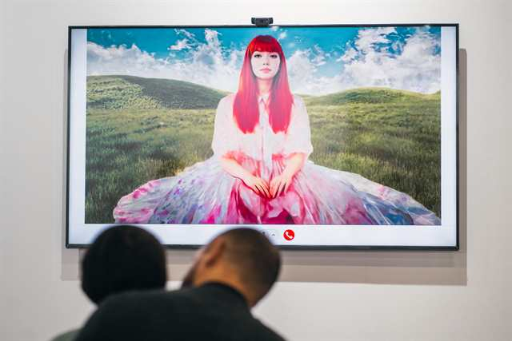

The Ties That Bind
Responsive 3D installation works.
View projectView on Manifold → · Verify on Optimistic Etherscan → · Chain: Optimism
Whirlwind of the Waking Dream follows a rendered figure through a compressed passage of shifting realms, where waking perception and dream logic blur into one another. The work holds the speed of a digital world as a bodily sensation: unstable, seductive, and difficult to stand still inside.

The work belongs to Wong's 3D video practice, where virtual bodies carry emotional states that are difficult to stage with a camera. Its brevity gives the movement a concentrated pressure, like a dream repeating until it becomes a signal.
Whirlwind of the Waking Dream was presented as a 1/1 NFT on Manifold's Optimism marketplace and sold for 5 ETH. Wong later noted it as the first-prize winner in Optimism's We Love The Art competition 1/1 category, acquired by Sebastien Borget / The Sandbox.
Responsive 3D installation works.
View project
AI video and inherited images.
View projectCGI and photography as memory.
View projectFor acquisitions and collector questions: studio@shavonnewong.art
For loans and exhibition inquiries: studio@shavonnewong.art